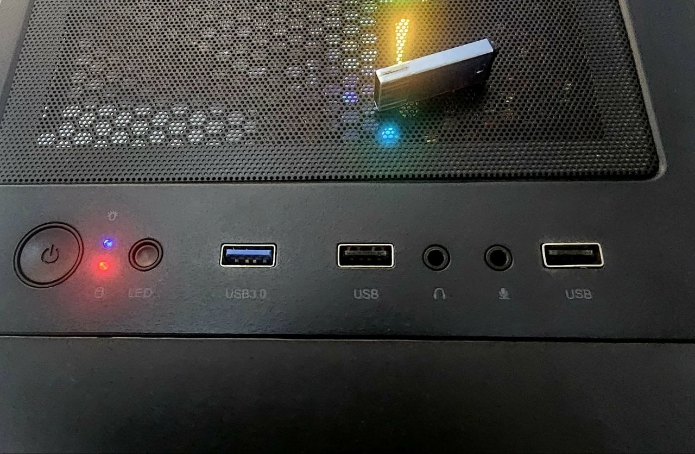
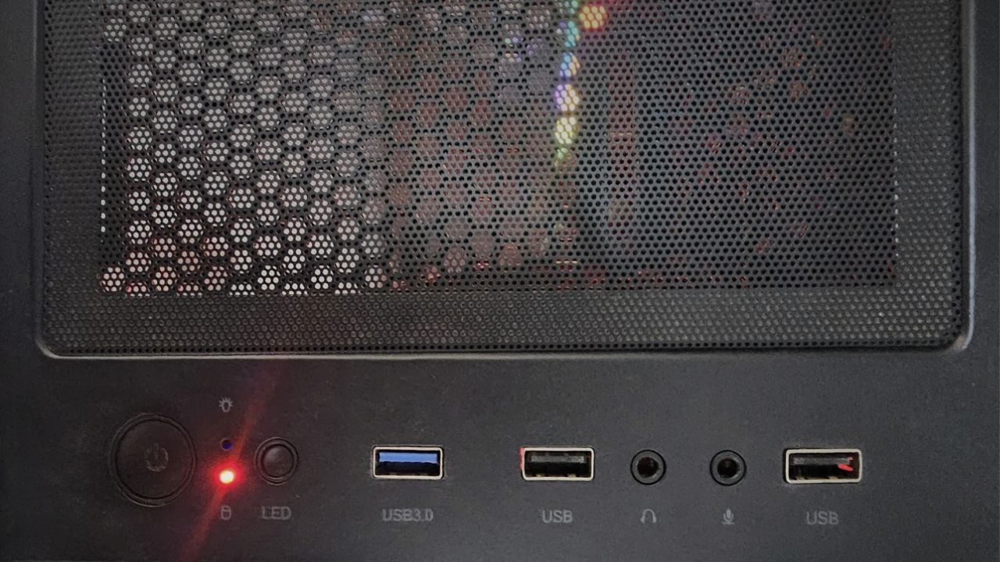

Poor man’s IPMI: an old USB stick as an out-of-band power button

Real servers have a baseboard management controller: a little computer that stays awake so you can power the big one down even when the operating system is unreachable. Mine doesn't have one. What it has is a spare USB port and an 8 GB stick from a drawer — which, it turns out, is enough.
Contents
The problem: shutting off the machine you're shutting off from
Two computers in one room. The monitors are plugged into the first one; the second is headless and I reach it over SSH from the first. Comfortable, until the evening I shut the first one down and realised what I'd just done: the machine I was using to talk to the server was the interface to the server. No display, no keyboard, no session. The only control left was the power button.
Holding a power button is not a shutdown, it's a crash. That box runs VMs. It means guests killed mid-write, buffers never flushed, filesystems dirty on the way back up. I did it once and disliked myself for it.
Yes, there are better answers
IPMI, iDRAC or iLO if the hardware has a BMC. A serial console. A managed PDU. Or simply keeping a phone or laptop on the same network with an SSH client on it. If any of those are available to you, use them — they are the real solution and this is not.
But consumer motherboards don't ship with a BMC, and plenty of environments won't let you add one, or lock the network down to the point where none of the above is on the table. And there is one failure mode where every network-based answer fails together: when the thing that's broken is the network. That's the whole meaning of out-of-band — a control path that doesn't depend on the path that's down. A USB port is about as out-of-band as it gets.
So this is the backup plan. It costs one drawer drive and about fifteen lines of shell.
The idea
Linux tells userspace about every device that appears, and it tells you where it appeared —
the physical port, not just the device. udev can run a script on that event. If the script
can read the port number, it can branch on it. That's the whole trick: one drive, several ports,
several meanings.

1 2 3- USB 3.0 — kernel path
1-3→ suspend - USB (middle) — kernel path
1-6→ reboot - USB (right) — kernel path
1-5→ shut down
Find your device
First you need two things: the drive's vendor and product ID, and the port path it lands on. Watch the event stream and plug the drive in:
udevadm monitor --property
Then confirm what the kernel thinks the drive is:
lsusbBus 001 Device 001: ID 1d6b:0002 Linux Foundation 2.0 root hub Bus 001 Device 009: ID 13fe:3e00 Phison Electronics Corp. Flash Drive Bus 002 Device 001: ID 1d6b:0003 Linux Foundation 3.0 root hub
There it is: 13fe:3e00. Now watch the kernel ring buffer while you plug it in, to see
which port path that socket corresponds to:
dmesg -Hw[ 3424.877813] usb 1-3: new high-speed USB device number 9 using xhci_hcd [ 3425.006386] usb 1-3: New USB device found, idVendor=13fe, idProduct=3e00, bcdDevice= 1.00 [ 3425.006390] usb 1-3: New USB device strings: Mfr=1, Product=2, SerialNumber=3 [ 3425.006391] usb 1-3: Product: Silicon-Power8G [ 3425.006392] usb 1-3: Manufacturer: UFD 2.0 [ 3425.006393] usb 1-3: SerialNumber: 12050650048E60025CB8DD13B3D [ 3425.007237] usb-storage 1-3:1.0: USB Mass Storage device detected [ 3425.007322] scsi host8: usb-storage 1-3:1.0 [ 3426.093984] scsi 8:0:0:0: Direct-Access UFD 2.0 Silicon-Power8G PMAP PQ: 0 ANSI: 4 [ 3426.094125] sd 8:0:0:0: Attached scsi generic sg1 type 0 [ 3427.330539] sd 8:0:0:0: [sdb] 15124992 512-byte logical blocks: (7.74 GB/7.21 GiB) [ 3427.331050] sd 8:0:0:0: [sdb] Write Protect is off [ 3427.331052] sd 8:0:0:0: [sdb] Mode Sense: 23 00 00 00 [ 3427.331188] sd 8:0:0:0: [sdb] No Caching mode page found [ 3427.331189] sd 8:0:0:0: [sdb] Assuming drive cache: write through [ 3427.362655] sdb: sdb1 sdb2 [ 3427.362721] sd 8:0:0:0: [sdb] Attached SCSI removable disk
Repeat for each socket you care about and write down the mapping. Mine came out like this:
| Port path | Socket on the front panel | Action |
|---|---|---|
1-3 | 1st from the left — the USB 3.0 socket | suspend |
1-6 | 2nd from the left — USB 2.0 | reboot |
1-5 | far right — USB 2.0 | shut down |
Port paths are a property of the motherboard and its internal wiring, not of the drive. Yours will differ, and they can change if you move the header cable to a different socket.
The script
udev hands the script a DEVPATH. The port falls out of it with one regex, and the rest
is a case statement.
/usr/local/bin/usb_action.sh
#!/bin/bash
DEVPATH="$1"
ACTION="$2"
logger "USB event: Action=$ACTION, DEVPATH=$DEVPATH"
if [ "$ACTION" != "add" ]; then
exit 0
fi
PORT=$(echo "$DEVPATH" | grep -oP 'usb[0-9]+/\K[0-9]+-[0-9]+')
# You can also extract using the full path if ports have more complex numbers
# PORT=$(echo "$DEVPATH" | awk -F'/' '{print $NF}')
case "$PORT" in
"1-5")
echo "USB connected to Port 5 - SHUTTING DOWN"
logger "USB plugged into Port 5 - Shutting down system"
/sbin/shutdown -h now
;;
"1-6")
echo "USB connected to Port 6 - RESTARTING"
logger "USB plugged into Port 6 - Restarting system"
/sbin/reboot
;;
"1-3")
echo "USB connected to Port 3 - SUSPENDING"
logger "USB plugged into Port 3 - Suspending system"
/usr/bin/systemctl suspend
;;
*)
echo "USB connected to unknown port: $PORT - No action"
;;
esacMake it executable, or udev will silently do nothing:
chmod +x /usr/local/bin/usb_action.sh
The udev rule
One line. Match the drive by vendor and product ID so no other device can trigger it, and pass the device path through to the script.
/etc/udev/rules.d/99-usb-port-action.rules
ACTION=="add", SUBSYSTEM=="usb", ATTRS{idVendor}=="13fe", ATTRS{idProduct}=="3e00", RUN+="/usr/local/bin/usb_action.sh $env{DEVPATH} add"Reload so udev picks it up:
udevadm control --reload-rulesudevadm trigger
It works
Three ports, three photographs, three different ways to end your session. Click any of them to see it full size.
{kind=link}
{kind=link}
{kind=link}
And the receipts, from journalctl. Each block ends the same way, which is the
point — that's my SSH session dying because the machine did what it was told:
Aug 05 20:14:13 server kernel: usb-storage 1-3:1.0: USB Mass Storage device detected Aug 05 20:14:13 server root[12967]: USB event: Action=add, DEVPATH=/devices/pci0000:00/0000:00:14.0/usb1/1-3 Aug 05 20:14:13 server root[12971]: USB plugged into Port 3 - Suspending system Aug 05 20:14:13 server root[12975]: USB event: Action=add, DEVPATH=/devices/pci0000:00/0000:00:14.0/usb1/1-3/1-3:1.0 Aug 05 20:14:13 server root[12979]: USB plugged into Port 3 - Suspending system Connection to server closed by remote host. Connection to server closed. Aug 05 20:19:04 server kernel: usb-storage 1-6:1.0: USB Mass Storage device detected Aug 05 20:19:04 server root[13896]: USB event: Action=add, DEVPATH=/devices/pci0000:00/0000:00:14.0/usb1/1-6 Aug 05 20:19:04 server root[13900]: USB plugged into Port 6 - Restarting system Aug 05 20:19:04 server root[13904]: USB event: Action=add, DEVPATH=/devices/pci0000:00/0000:00:14.0/usb1/1-6/1-6:1.0 Aug 05 20:19:04 server root[13908]: USB plugged into Port 6 - Restarting system Connection to server closed by remote host. Connection to server closed. Aug 05 20:20:46 server kernel: usb 1-5: new high-speed USB device number 14 using xhci_hcd Aug 05 20:20:46 server kernel: usb 1-5: New USB device found, idVendor=13fe, idProduct=3e00, bcdDevice= 1.00 Aug 05 20:20:46 server kernel: usb 1-5: New USB device strings: Mfr=1, Product=2, SerialNumber=3 Aug 05 20:20:46 server kernel: usb-storage 1-5:1.0: USB Mass Storage device detected Aug 05 20:20:46 server root[14437]: USB event: Action=add, DEVPATH=/devices/pci0000:00/0000:00:14.0/usb1/1-5 Aug 05 20:20:46 server root[14441]: USB plugged into Port 5 - Shutting down system Aug 05 20:20:46 server root[14445]: USB event: Action=add, DEVPATH=/devices/pci0000:00/0000:00:14.0/usb1/1-5/1-5:1.0 Aug 05 20:20:46 server root[14449]: USB plugged into Port 5 - Shutting down system Connection to server closed by remote host. Connection to server closed.
The rough edge
Look closely at those logs and you'll see the script runs twice per insertion —
once for …/usb1/1-3 and once for …/usb1/1-3/1-3:1.0. The first is the USB
device, the second is its mass-storage interface, and the rule matches both.
It's harmless here, because shutting down twice is just shutting down. But if you ever hang something non-idempotent off this, it will bite. Constrain the rule to the device itself:
/etc/udev/rules.d/99-usb-port-action.rules — firing once
ACTION=="add", SUBSYSTEM=="usb", ENV{DEVTYPE}=="usb_device", ATTRS{idVendor}=="13fe", ATTRS{idProduct}=="3e00", RUN+="/usr/local/bin/usb_action.sh $env{DEVPATH} add"Was it worth it
I haven't hard-powered that machine since. The stick lives next to the case now, and when I've shut the wrong computer down first — which I still do — the server goes down cleanly, VMs and all, by walking two metres and pushing a drive into a hole.
It is not a substitute for a BMC and I wouldn't run it anywhere with foot traffic. But as the thing
you fall back on when the network is the casualty, a control path made of copper and a
case statement is hard to beat. And it's a genuinely good way to learn what
udev is actually doing under all those rules you've copied off the internet.
